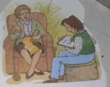

Página 2
“La importancia de la transmi-
sión oral y la necesidad de fijar
por escrito las canciones que co-
nocen las personas mayores y
que han llegado a ellas de for-
ma oral.”
“Muchas canciones antiguas se
han perdido porque nadie las
escribió.”
“Las personas mayores pueden aportar mucho a la cultura con sólo re-
cordar canciones y dictárselas a los niños y niñas.”